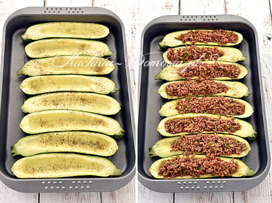
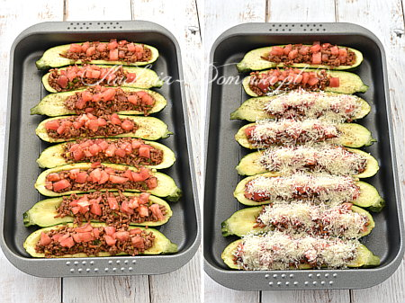

Cukinia faszerowana mięsem mielonym
Opis potrawy:
- Cukinia faszerowana – Lekki i zdrowy obiad, który jest bezglutenowy, bezmleczny, bezjajeczny i niskowęglowodanowy. Tak przygotowane cukinie są soczyste, lekkie, a zarazem sycące.
Składniki na ok. 4 porcje:
- 4 nieduże cukinie (jedna ok. 230 g)
- 400 g mięsa mielonego (u mnie wieprzowo- wołowe)
- 4 zielone cebulki
- 1 średniej wielkości pomidor
- ok. 2 łyżek oleju
- ok. 50 g sera parmezan
- sól, pieprz, czerwona papryka w proszku
Sposób przygotowania:
- Cukinie umyć, osuszyć i przekroić wzdłuż na pół. (Proszę przekroić je w miarę równo, aby otrzymać dwie równe i stabilne połówki). Pestki wydrążyć łyżeczką. (One nie będą potrzebne).
- Cukinie posmarować wewnątrz i z zewnątrz 1 łyżką oleju.
- Połówki cukinii ułożyć w żaroodpornym naczyniu i oprószyć solą i pieprzem.
- Podpiec w nagrzanym piekarniku ok. 20 minut w temperaturze 180°C (grzałka góra- dół).
- W tym czasie przygotować nadzienie: Zielone cebulki umyć i osuszyć. Posiekać osobno zieloną i białą część cebulki.
- Na patelni rozgrzać 1 łyżkę oleju. Dodać białą część cebulki i lekko podsmażyć. Dodać mięso mielone i zieloną część cebulki.
Smażyć, mieszając, aż mięso straci kolor różowy. Następnie wmieszać koncentrat pomidorowy.
Przyprawić solą, pieprzem i papryką.
- Pomidora naciąć delikatnie na krzyż, włożyć do miski, zalać wrzątkiem do przykrycia, pozostawić na kilkanaście
sekund, a następnie przełożyć do zimnej wody. Obrać ze skórki i pokroić w kostkę.
- Mięsem mielonym wypełnić wgłębienia w cukinii, dociskając je lekko, aby nie wypadało.

- Rozłożyć kawałki pomidora i posypać startym na tarce o małych oczkach (na bocznej ściance) parmezanem.

- Piec kolejne 30 minut w temperaturze 180°C (grzałka góra- dół). Gdyby po tym czasie ser nie był lekko
przyrumieniony, można włączyć na chwilę termoobieg na 180°C (u mnie ok. 4 minut).
Teraz nie pozastało nic innego jak prztoczyć słowa Françoisa Rabelaisa: Apetyt przychodzi w miarę jedzenia.
I życzyć: Smacznego!
Koszty |bez kosztów przypraw|:
| Składnik: |
Cena: |
| Cukinia 1szt. |
3.49 zł |
| Mięso mielone 400g |
9.99 zł |
| Cebula zielona |
1.99 zł |
| Pomidor |
0.50 zł |
| Ser parmezan |
7.50 zł |
Informacje o alergenach:
- Cukinia faszerowana mięsem mielonym
- Jedynym alergenem tu występującym jest gluten
Newsletter
Aktywuj subskrypcję aby dostawać regularnie nowe przepisy :)
Autor strony:
Mateusz Wołyńczuk
Dolnośląska Szkoła Wyższa
Strzegomska 55
Wrocław, Dolnośląskie